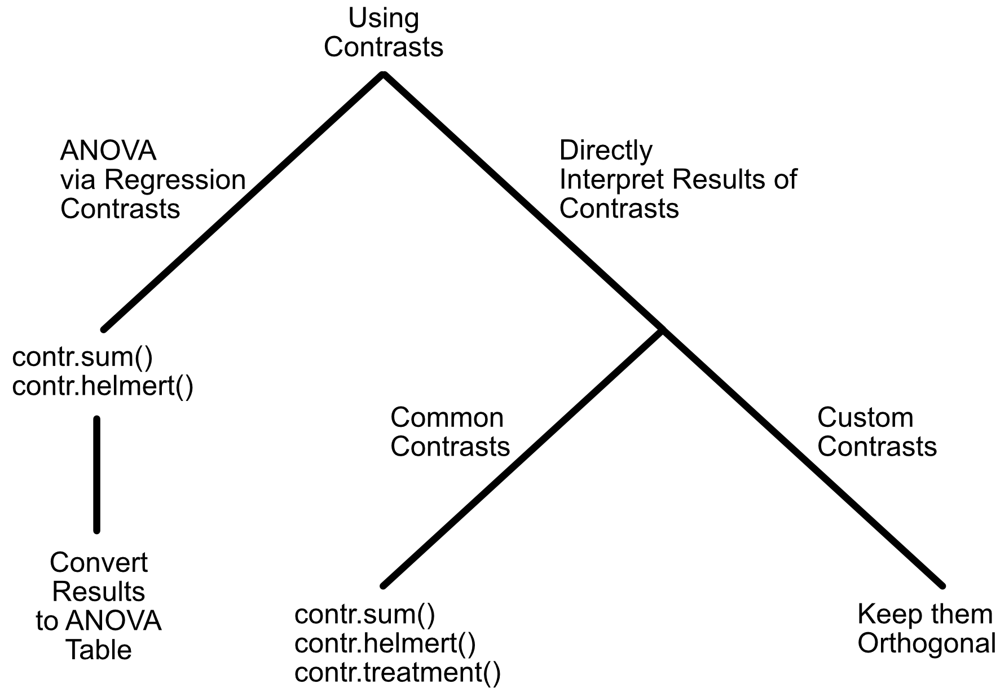
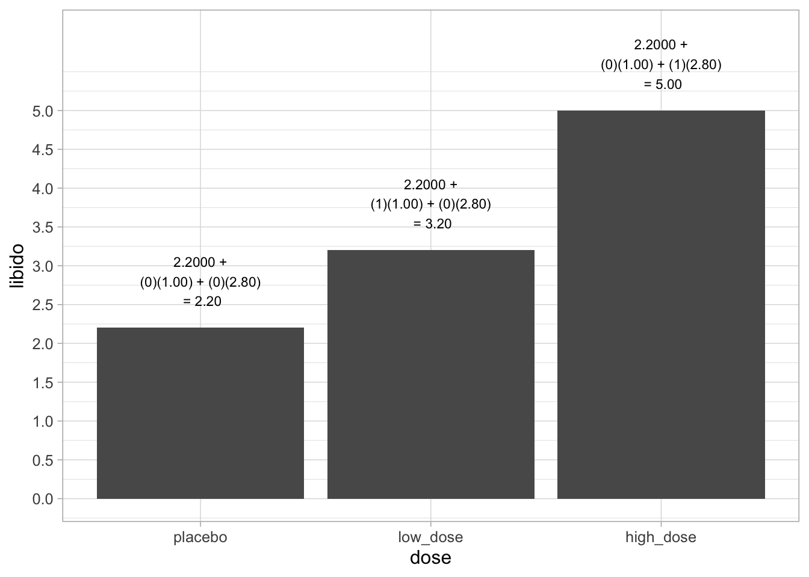

8 One-way ANOVA via Regression
8.1 Using Contrasts
8.2 Treatement/Dummy Coding
Use the Treatment contrast ONLY when you are interested in the contrast itself. DO NOT use if you are interested in typical ANOVA results (main effect, main effect, interaction, etc.).
This approach is the default approach in R unless you specify otherwise. In most cases, this is NOT what you want in Psychology analyses.
Comparisons are to one specific level of the Independent Variables that we call the reference group.
8.2.1 Original Data
print(viagra) libido dose
1 3 placebo
2 2 placebo
3 1 placebo
4 1 placebo
5 4 placebo
6 5 low_dose
7 2 low_dose
8 4 low_dose
9 2 low_dose
10 3 low_dose
11 7 high_dose
12 4 high_dose
13 5 high_dose
14 3 high_dose
15 6 high_doseNote the means for the three groups are:
viagra %>% group_by(dose) %>% summarise(group_mean = mean(libido))# A tibble: 3 × 2
dose group_mean
<fct> <dbl>
1 placebo 2.2
2 low_dose 3.2
3 high_dose 5 8.2.2 Set Factor with Reference Group
viagra <- viagra %>%
mutate(dose = as_factor(dose)) %>%
mutate(dose = relevel(dose, ref = "placebo"))8.2.3 Regression with Treatment Contrast
The computer will always use contrasts when there are categorical variables. So you should set the contrast you want. Here we set the contrast as Treatment (or Dummy) Coding. We use treatment contrasts when we are interested in directly interpreting the regression results.
options(contrasts = c("contr.treatment", "contr.poly"))
lm_viagra <- lm(libido ~ dose + 1, data = viagra)tidy(lm_viagra)| term | estimate | std.error | statistic | p.value |
|---|---|---|---|---|
| (Intercept) | 2.2 | 0.6271629 | 3.507860 | 0.0043189 |
| doselow_dose | 1.0 | 0.8869423 | 1.127469 | 0.2815839 |
| dosehigh_dose | 2.8 | 0.8869423 | 3.156913 | 0.0082681 |
What is going on here? The single dose column has disappeared. Instead we get \(b\)-weights for doselow_dose and dosehigh_dose. How do you interpret that information?
8.2.4 Treatment Contrasts Explained
When we used the treatment contrast we converted the use the rules below:
contr.treatment(3) 2 3
1 0 0
2 1 0
3 0 1- The first contrast row (0 0) indicates the mean of group 1 (placebo) is the intercept plus the 0 times first slope and 0 times the second slope.
\[ placebo-mean = 2.20 + 0(1.00) + 0(2.80) = 2.20 \]
- The second contrast row (1 0) indicates the mean of group 2 (low dose) is the intercept plus the 1 times first slope and 0 times the second slope.
\[ low-dose-mean = 2.20 + 1(1.00) + 0(2.80) = 3.20 \]
- The third contrast row (0 1) indicates the mean of group 3 (high dose) is the intercept plus the 0 times first slope and 1 times the second slope.
\[ low-dose-mean = 2.20 + 0(1.00) + 1(2.80) = 5.00 \]
Recall the levels of the dose variable:
levels(viagra$dose)[1] "placebo" "low_dose" "high_dose"We set the order of the levels previously with the fct_relevel() command.
When we ran the regression we effectively use the predictors below
print(viagra_dummy_coded)# A tibble: 15 × 4
libido intercept dose_low_dose dose_high_dose
<int> <dbl> <dbl> <dbl>
1 3 1 0 0
2 2 1 0 0
3 1 1 0 0
4 1 1 0 0
5 4 1 0 0
6 5 1 1 0
7 2 1 1 0
8 4 1 1 0
9 2 1 1 0
10 3 1 1 0
11 7 1 0 1
12 4 1 0 1
13 5 1 0 1
14 3 1 0 1
15 6 1 0 1Examine the weights in the above table and see how they can be used to recreate the group means.

8.2.5 ANOVA Summary Information
With a one-way ANOVA, it’s easy to exact ANOVA information from the Regression output.
glance(lm_viagra)| r.squared | adj.r.squared | sigma | statistic | p.value | df | logLik | AIC | BIC | deviance | df.residual | nobs |
|---|---|---|---|---|---|---|---|---|---|---|---|
| 0.4603659 | 0.3704268 | 1.402379 | 5.118644 | 0.0246943 | 2 | -24.68305 | 57.3661 | 60.1983 | 23.6 | 12 | 15 |
From this output you can see that for this one-way ANOVA, \(F\)(2, 12) = 5.119, \(p\) = .025. In a one-way ANOVA the effect size is \(\eta^2 = \eta_{partial}^2=R^2= .46\). Note that in a one-way ANOVA, \(\eta^2\) = \(\eta_{partial}^2\) but this is not the case when you move to N-way ANOVA.
summary(lm_viagra)
Call:
lm(formula = libido ~ dose + 1, data = viagra)
Residuals:
Min 1Q Median 3Q Max
-2.0 -1.2 -0.2 0.9 2.0
Coefficients:
Estimate Std. Error t value Pr(>|t|)
(Intercept) 2.2000 0.6272 3.508 0.00432 **
doselow_dose 1.0000 0.8869 1.127 0.28158
dosehigh_dose 2.8000 0.8869 3.157 0.00827 **
---
Signif. codes: 0 '***' 0.001 '**' 0.01 '*' 0.05 '.' 0.1 ' ' 1
Residual standard error: 1.402 on 12 degrees of freedom
Multiple R-squared: 0.4604, Adjusted R-squared: 0.3704
F-statistic: 5.119 on 2 and 12 DF, p-value: 0.02469From this output you can (AGAIN) see that for this one-way ANOVA, \(F\)(2, 12) = 5.119, \(p\) = .025. In a one-way ANOVA the effect size is \(\eta^2 = \eta_{partial}^2=R^2= .46\).
Note: A good exam question would be to present a table like this an then ask you the mean for each group. With treatment/dummy coding the regression weight indicate for the reference group the mean of that group. For the other groups, the regression weights indicate the difference from the reference group.
8.3 Sum Contrast / Effect Contrast
We typically use Sum Coding or Effect Coding when we are not interested in the directly interpretting the regression results. Although the results can be directly interpretted this is not commonly done. Instead we use Sum Coding or Effect Coding when we use regression to run an ANOVA. Here we will directly interpret the results, however, to show that it can be done.
With sum coding, the contrasts create \(b\)-weight represent comparisons of each group mean to the to the grand mean. The contrasts we use for each group are presented below:
contr.sum(3) [,1] [,2]
1 1 0
2 0 1
3 -1 -1We run the regression with the code below. Notice we take care to set the contrast to sum before the regression.
# Check levels
levels(viagra$dose)[1] "placebo" "low_dose" "high_dose"# select sum coding
options(contrasts = c("contr.sum", "contr.poly"))
lm_viagra_sum_coded <- lm(libido ~ dose + 1,
data = viagra)We see the results are below. We use as.data.frame() just to see all the decimals.
tidy(lm_viagra_sum_coded) %>% as.data.frame() term estimate std.error statistic p.value
1 (Intercept) 3.4666667 0.3620927 9.5739760 5.720565e-07
2 dose1 -1.2666667 0.5120764 -2.4735893 2.930022e-02
3 dose2 -0.2666667 0.5120764 -0.5207556 6.120112e-01In the results above the intercept corresponds to the grand mean.
Recall the sum contrast below:
contr.sum(3) [,1] [,2]
1 1 0
2 0 1
3 -1 -1- The first contrast row (1 0) indicates the mean of group 1 (placebo) is the intercept plus the 1 times first slope and 0 times the second slope.
\[ placebo-mean = 3.4666667 + 1(-1.2666667) + 0(-0.2666667) = 2.20 \]
- The second contrast row (0 1) indicates the mean of group 2 (low dose) is the intercept plus the 0 times first slope and 1 times the second slope.
\[ low-dose-mean = 3.4666667 + 0(-1.2666667) + 1(-0.2666667)= 3.20 \]
- The third contrast row (-1 -1) indicates the mean of group 3 (high dose) is the intercept plus -1 times first slope and -1 times the second slope.
\[ low-dose-mean = 3.4666667 + (-1)(-1.2666667) + (-1)(-0.2666667)= 5.00 \]
8.3.1 Behind the scenes
What is the grand mean? It’s just the mean of the dependent variable column across all conditions.
summary_stat = viagra %>%
summarise(grand_mean = mean(libido))
print(summary_stat) grand_mean
1 3.466667In the above analysis, when we used this code block:
options(contrasts = c("contr.sum", "contr.poly"))
lm_viagra_sum_coded <- lm(libido ~ dose + 1,
data = viagra)We were doing a regression with the predictors below:
print(viagra_sum_coded) libido intercept dose1 dose2
1 3 1 1 0
2 2 1 1 0
3 1 1 1 0
4 1 1 1 0
5 4 1 1 0
6 5 1 0 1
7 2 1 0 1
8 4 1 0 1
9 2 1 0 1
10 3 1 0 1
11 7 1 -1 -1
12 4 1 -1 -1
13 5 1 -1 -1
14 3 1 -1 -1
15 6 1 -1 -1That is, when we specified this:
lm_viagra <- lm(libido ~ dose + 1, data = viagra)The computer actually ran this:
lm_viagra_sum <- lm(libido ~ dose1 + dose2 + 1,
data = viagra_sum_coded)tidy(lm_viagra_sum)| term | estimate | std.error | statistic | p.value |
|---|---|---|---|---|
| (Intercept) | 3.4666667 | 0.3620927 | 9.5739760 | 0.0000006 |
| dose1 | -1.2666667 | 0.5120764 | -2.4735893 | 0.0293002 |
| dose2 | -0.2666667 | 0.5120764 | -0.5207556 | 0.6120112 |

8.3.2 ANOVA values
glance(lm_viagra_sum)| r.squared | adj.r.squared | sigma | statistic | p.value | df | logLik | AIC | BIC | deviance | df.residual | nobs |
|---|---|---|---|---|---|---|---|---|---|---|---|
| 0.4603659 | 0.3704268 | 1.402379 | 5.118644 | 0.0246943 | 2 | -24.68305 | 57.3661 | 60.1983 | 23.6 | 12 | 15 |
From this output you can see that for this one-way ANOVA, F(2,12) = 5.118644, p = 0.0246943.
summary(lm_viagra_sum)
Call:
lm(formula = libido ~ dose1 + dose2 + 1, data = viagra_sum_coded)
Residuals:
Min 1Q Median 3Q Max
-2.0 -1.2 -0.2 0.9 2.0
Coefficients:
Estimate Std. Error t value Pr(>|t|)
(Intercept) 3.4667 0.3621 9.574 5.72e-07 ***
dose1 -1.2667 0.5121 -2.474 0.0293 *
dose2 -0.2667 0.5121 -0.521 0.6120
---
Signif. codes: 0 '***' 0.001 '**' 0.01 '*' 0.05 '.' 0.1 ' ' 1
Residual standard error: 1.402 on 12 degrees of freedom
Multiple R-squared: 0.4604, Adjusted R-squared: 0.3704
F-statistic: 5.119 on 2 and 12 DF, p-value: 0.02469From this output you can (again) see that for this one-way ANOVA, F(2,12) = 5.118644, p = 0.0246943.
8.4 Helmert Contrast
Use the Helmert Contrast if you are interested in typical ANOVA results (main effect, main effect, interaction, etc.).
8.5 Summary: Contrast Types
| Name/Synonym | R command Example | Nature of Comparison | Note |
|---|---|---|---|
| Treatment Contrast / Dummy Contrast |  |
Intercept is the reference group mean. Unstandardized weights indicate difference between a group’s mean and reference group mean. In this example, group 1 is the reference group. Notice the first contrast column is for the second group - because group 1 is the intercept. | Default in R. Do NOT use for ANOVA. |
| Sum Contrast / Effect Contrast |  |
Intercept is the grand mean. Unstandardized weights are used to create a predicted score that corresponds to the mean for each group. | USE for ANOVA. This works because the intercept is the grand mean. |
| Helmert Contrast |  |
Intercept is the grand mean. First contrast, unstandardized weight indicate difference between Group 2 and Group 1 means. Second contrast, unstandardized weight indicate difference between Group 3 mean and the average of the Group 1 and Group 2 means. Third contrast, unstandardized weight indicate difference between Group 4 mean and the average of the Group 1, Group 2, and Group 3 means. And so on. | USE for ANOVA. This works because the intercept is the grand mean. |